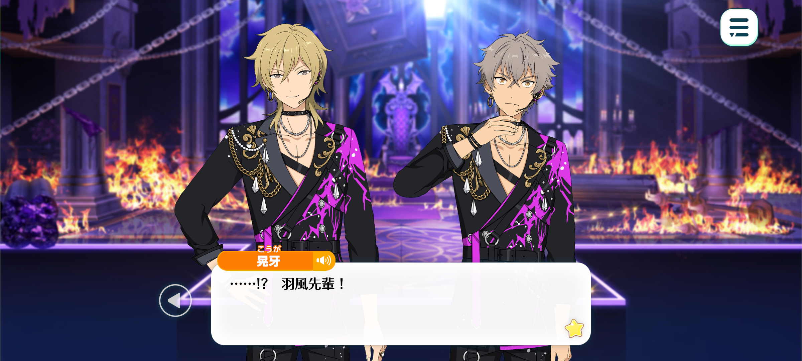
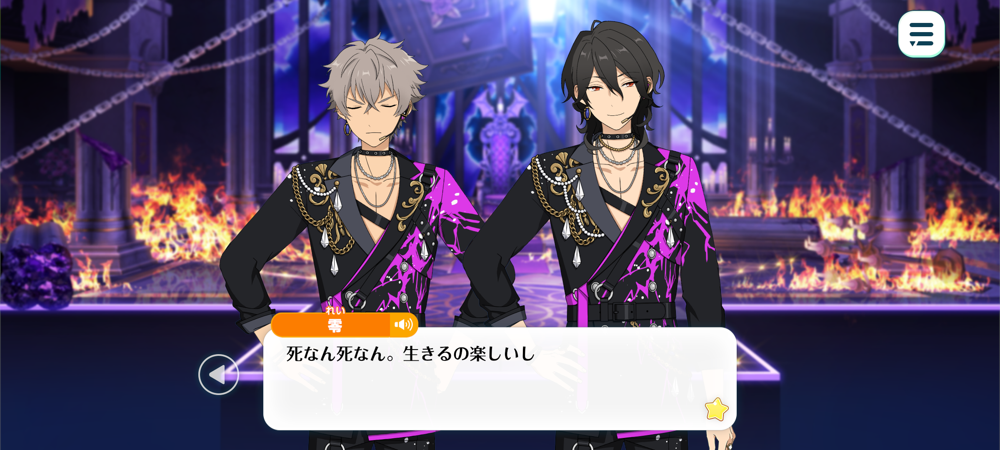
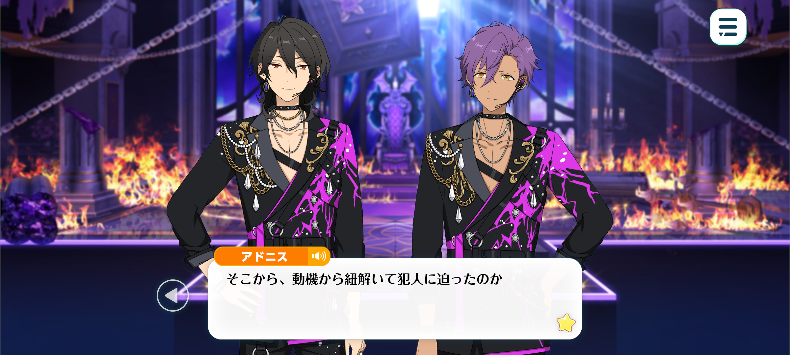

PSYCHOBREAK — Chapter 15



Kaoru: Okay, okay, calm down~♪
It's not a good look when you two get all flustered, is it?
Koga: …!? Hakaze-senpai!
Adonis: There are two Hakaze-senpais...? No, wait. You're the real Hakaze-senpai?
Kaoru: Yup. Sorry we're late. I heard you'd been touring as HELLSING, but you kept travelling further and further away from ES.
It wasn't easy catching up with you, was it, Rei-kun?
Rei: Indeed. We had our own commitments to attend to as well, and I was beginning to fear we might not arrive in time.
Koga: Sakuma-senpai's here too...? W-what are you two doing here? Haven't you got things to be getting on with, like those stupid variety shows?
Rei: Of course! We have seen to all our other commitments as well. Not a single detail has been overlooked.
I made a rather unreasonable request of the other performers and staff some time ago, and we recorded a considerable amount of material in advance to keep in reserve.
As a result, we shan't need to take part in any more recordings for quite some time.
I had a feeling something of this sort might happen, you see, so I made the necessary preparations well in advance.
Adonis: That's just like you, Sakuma-senpai. How much of this did you actually anticipate?
Rei: Kukuku. There is very little in this world that I can truly foresee. And yet, even the smallest amount of preparation can sometimes make all the difference to how events unfold.
That is why I endeavour to remain prepared for every eventuality. Nothing more, nothing less.
My resentment towards the world has long since faded, and I have put an end to my days of shutting myself away in my coffin. If I am never to lose anything again, then all I can do is follow Adonis-kun's example and strive to do the very best I can.
Koga: Hmph. Get up and do some work, ya vampire bastard~! All you ever do is laze around.
Jeez, seriously... You scare the shit out of me every time. You lie there without movin' a muscle, and I start wonderin' if you've kicked the bucket.

Rei: I shan't dieee~. Life is far too enjoyable for that, after all.
Besides, I already know that each and every one of you possesses such admirable qualities as human beings. You never expect me to do everything for you. Instead, you strive to overcome whatever difficulties you face through your own efforts.
I know that already. Ever since UNDEAD's very first performance, my conviction in that has only grown stronger with each passing day.
And so, I am able to rest easy.
I have no doubt that you will never give me cause to grow weary of you.
Indeed, I am most grateful to have that assurance.
You have all saved me.
Kaoru: Ahaha! Rei-kun's always going on about things in such abstract terms, so let me put it into more concrete words, 'kay?
Don't just let him get away with saying all these profound-sounding things. You've got to explain what you actually mean, you know?
Rei: Yes, yes, mama.
Kaoru: You just brought up a sore subject on purpose, didn’t you?
Rei: It's simply because I know that, no matter what I say or do, you will all love me and accept me. That gives me the freedom to be a little silly from time to time.
Kaoru: I’m gonna kick you.
…Anyway, since we’re in the middle of a live, I’ll keep this brief.
Rei-kun and I dreamt again, about the past.
And in that dream, we found the mastermind behind this whole affair... and dealt with them.
That's why our fakes are glitching and on the verge of shutting down. The person controlling them has been dealt with, so they've lost control of the copies.
Koga: Huh? What? What d'you mean by that, playboy!?
Kaoru: It's been a while since you called me that. I never told you at the time, but I actually didn't mind that nickname.
If anything, being so formal and calling me 'senpai' all the time made me go, 'ewww~'. It felt like there was a wall between us, and I found it kinda lonely. It was strange seeing you act so uncharacteristically well-behaved, too.
Koga: Oh, my bad, it’s just ‘cos I’ve been callin’ the fakes ‘playboy’ ‘n ‘vampire bastard’.
Kaoru: It's fine. Anyway, so? Is there anything you'd like me to explain?
Koga: Of course there fuckin’ is…!
What d'you mean, you've 'dealt with the mastermind'!? Who was it!? We've been left completely in the dark!
This isn't some manga that's been cancelled halfway through! What's next, you're gonna tell us you beat some ridiculously powerful final boss off-screen?!
Rei: To be perfectly honest, they were hardly some mighty and formidable villain.
The culprit behind this entire affair was nothing more than an insignificant, contemptible individual. The sort of person one might encounter anywhere.
They called themselves 'vampires', so, for convenience's sake, I shall refer to the mastermind as Dracula-kun.
Koga: I don't give a damn what you call him, but... 'vampires'? That's what we heard about in that dream. Or more like, in our memories of the past, wasn't it?
Rei: Indeed. It was something that ought never to have existed in the first place - one of the many distortions in history.
I suspected that the mastermind behind this affair might lie at the very root of that distortion.
And I doubt their intentions were simply to show us a few amusing dreams, either.
They had dreams of their own, their own wishes, and ambitions. There was something they wanted to accomplish.

Adonis: So you worked backwards from the motive to narrow down the identity of the culprit?
Rei: Indeed. It is the very foundation of any detective story - who committed the crime, why they did it, and how.
One must investigate, gather evidence, make deductions, and ultimately uncover the truth.
Fortunately, our culprit was rather careless and left behind a wealth of clues. Solving the mystery was not particularly difficult.
To begin with, the person responsible for this incident was one of my former followers.
He was among the delinquents who called themselves 'vampires' in that dream. one of those who had once been crushed as part of that wider movement.
He admired me, took it upon himself to worship me, and sought to become my successor...
He was one of the corrupt students of Yumenosaki who were trampled underfoot by the Student Council as history unfolded.
That culprit, Dracula-kun, was sacrificed to serve as a stepping stone in the Student Council's revolutionary tale. And yet, despite having suffered such a terrible fate, he had learned absolutely nothing.
He simply went on to repeat the very same mistakes, without ever reflecting on what had happened.
Koga: …
Rei: He couldn't accept it. He couldn't understand why he had been made to suffer so terribly. He believed it was all utterly unjust.
Consumed by anger and resentment, he convinced himself that the world as it stood, that history itself, was wrong.
And so, he sought to reshape history into what he believed was the correct version.
In the perfect world he imagined, he would be my best friend, my greatest admirer, my most devoted follower...
In other words, he wanted to be someone close to me. Someone I loved.
Kaoru: This might sound a little silly, but... isn't that more or less what we are now?
Rei: Indeed. To put it bluntly, I believe what he truly wanted was to become a member of UNDEAD.
The culprit behind this incident was a pitiful, lost soul who longed to become one of the undead, yet could never become one himself.